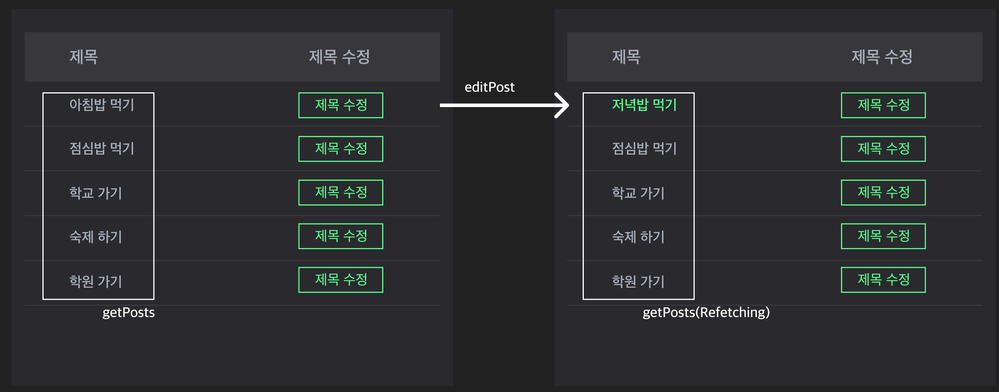

짐박스 CRM에서 Auto-Refetching 구현하기
짐박스 CRM에서 Auto-Refetching 구현하기
들어가며
CRM(Customer Relationship Management) 은 고객 관계 관리 프로그램으로 말하며, 짐박스에 대입하여 말하자면 “헬스장을 다니고 있는 회원의 데이터 관리 프로그램” 으로 설명할 수 있습니다.
CRM의 목적은 회원님이 어떤 상품을 결제했고, 이를 언제 갱신하며, 필요한 특정 행동들을 취하는 것이 그 목적이라 할 수 있겠습니다.
뭐가 문제야?
초기 짐박스 CRM 은 Redux 를 사용하여 상태를 관리하고 있었습니다. 하지만 시간이 갈수록 CRM의 덩치가 커지면서 여러가지 기능들이 붙기 시작했습니다.
그러다 보니 actionType을 정의하고, 그 함수를 정의하고 Reducer를 정의하여 1개의 액션을 생성하는 방식은 점차 비효율적으로 다가왔고, 이에따라 Redux-Toolkit 패키지 중 RTK Query를 도입했습니다.
우리가 왜 RTK Query를 도입했는가? 3줄로 요약하면,
- CRM 특성상 여러가지 액션이 많은데, 이를 Redux를 통해 일일히 작성하는 것은 무리
- Hook 을 제공하여 데이터를 Fetching, Catching 할 때의 State를 쉽게 사용할 수 있음
- Auto-ReFetching 의 효율성
Query & Mutation, 그리고 Auto-Refetching
지금부터 RTK Query의 Query와 Mutation 을 간단하게 알아보고 이를 자동으로 Refetching 하는 구조에 대해 이야기해보고자 합니다. Query와 Mutation 에 대한 자세한 설명은 공식 문서에서 확인 가능합니다.
Query
일반적으로 Redux에서 데이터(상태)를 불러오는 과정을 설명하면
- 상태를 관리하는 리덕스 스토어에서 Reducer 를 호출하고 그 리턴 값을 초기 상태로 저장하고
- UI가 처음 렌더링 될 때, 이 UI를 렌더링하는 컴포넌트는 위 리덕스 스토어의 상태에 접근하며
- 이 상태를 렌더링에 활용합니다.
이 데이터의 상태를 감지하기 위해서는 여러번의 useSelector, useEffect 를 사용해야합니다.
하지만 RTK Query 에서는 useQuery Hook 을 제공하여, 이 모든 것을 하나의 Hook으로 대체합니다.
또한 해당 Hook 에는 Query의 Loading, Fetch, Error 의 상태를 알 수 있는 프로퍼티들이 존재하여, UI의 가변성을 높여줍니다.
데이터가 Loading 상태일 때는 스피너를 보여주고, 데이터를 성공적으로 받아오면(Success) UI, 에러가 발생하면(Error) 에러 메세지를 보여주는 식으로 말이죠.
Mutation
Redux에서 데이터를 업데이트하는 방식도 RTKQ가 제공하는 Mutation Hook으로 단순화 할 수 있습니다.
일반적으로 Redux 에서는 아래와 같이 데이터를 업데이트합니다.
- 유저가 UI 를 통해 이벤트 핸들러를 작동시키면
- Dispatch 가 일어나서 액션을 일으키고
- 스토어에서는 액션 타입과 payload 값을 받고
- 이전 상태와 들어온 액션으로 리듀서 함수를 실행하고, 함수의 리턴 값을 새로운 상태로 변경한다.
- 상태값이 변화함에 따라 해당 스토어를 구독 중인 UI들은 새로운 상태 값으로 렌더링 된다.
이를 위해서는 여러가지 액션 타입을 정의해주고, 액션 함수를 생성해야했으며 이에 따라 보일러플레이트 코드를 생성해줘야만 했습니다.
Mutation Hook 은 액션 타입, 액션 함수 생성 등 여러가지 불필요한 코드를 작성하지 않고도, 상태를 업데이트할 수 있게 도와줍니다. 또한 Mutation은 Trigger 함수를 파라미터로 제공하며, 해당 Trigger 함수를 통해 상태를 업데이트 할 수 있습니다.
useQuery Hook 과 동일하게, 상태를 알 수 있는 여러 프로퍼티를 제공하여 UI의 가변성을 높여줍니다.
Auto-Refetching
useQuery, useMutation 을 통해 데이터를 가져오고 수정하더라도 이를 실시간으로 확인할 수 없다면 사용하는 유저 입장에서는 혼돈이 올 수 밖에 없습니다. 특정 버튼을 눌러 새로고침을 하거나, 아예 페이지를 새로고침하는 방법이 있을 수 있긴 한데 이는 UX 측면에서 상당히 불필요한 행동입니다.
RTKQ 에서는 불필요한 행동을 방지하고, 유저에게 가장 최근의 데이터를 보여줄 수 있는 Auto-Refetching 기능을 구현할 수 있습니다.
-
☝🏻 RTKQ 에서는 Query 와 Mutation 의 연관관계를 정의함으로써 자동으로 데이터를 Refetching 할 수 있는데, 이는 Tag 를 사용하여 가능합니다.
-
🤞🏻 이때 Tag 는 Automated Re-fetching 을 위한 고유한 값입니다. Label 이라고 생각하면 편하며, Query 가 제공하고 Mutation 이 Re-fetching을 할지 안할지 결정합니다.
우선 createApi 내부에서 tagTypes 를 선언합니다.
tagTypes는 Array 형식으로 선언하며 각 항목은 String 값으로 선언되어야합니다. 보통 Tag는 Query와 Mutation 의 관계를 명확하게 이해할 수 있는 값으로 선언합니다.
import { createApi, fetchBaseQuery } from "@reduxjs/toolkit/query";
const api = createApi({
baseQuery: fetchBaseQuery({
baseUrl: "/",
}),
tagTypes: ["Post", "User"], // createApi 파라미터에서 tagTypes 선언
endpoints: (build) => ({
getPosts: build.query({
query: () => "/posts",
}),
getUsers: build.query({
query: () => "/users",
}),
addPost: build.mutation({
query: (body) => ({
url: "post",
method: "POST",
body,
}),
}),
}),
});
그 이후 endpoints 함수에 Tag 값을 부여합니다.
이때 Query는 Tag를 부여하는 provideTags로, Mutation은 Tag를 Invalidate 하는 invalidateTags로 부여합니다.
import { createApi, fetchBaseQuery } from "@reduxjs/toolkit/query";
const api = createApi({
baseQuery: fetchBaseQuery({
baseUrl: "/",
}),
tagTypes: ["Post", "User"], // createApi 파라미터에서 tagTypes 선언
endpoints: (build) => ({
getPosts: build.query({
query: () => "/posts",
providesTags: ["Post"], // posts를 호출할 때 해당 데이터에 Post Tag 부여
}),
getUsers: build.query({
query: () => "/users",
providesTags: ["User"], // users를 호출할 때 해당 데이터에 User Tag 부여
}),
addPost: build.mutation({
query: (body) => ({
url: "post",
method: "POST",
body,
}),
invalidateTags: ["Post"], // Post를 추가할 때, "Post" Tag를 갖고 있는 Query를 새로고침함
}),
}),
});
하지만 이럴 경우, Mutation으로 하나의 값을 변경했을 때 전체 Query를 불러와 성능에 문제를 일으킬 수 있습니다. 이는 CRM에서 자주 사용하는 Table 형태의 UI에서 나타날 수 있는 이슈입니다.
import { createApi, fetchBaseQuery } from '@reduxjs/toolkit/query'
const api = createApi({
baseQuery: fetchBaseQuery({
baseUrl: '/',
}),
tagTypes: ['Post', 'User'], // createApi 파라미터에서 tagTypes 선언
endpoints: (build) => ({
getPosts: build.query({
query: () => '/posts',
providesTags: ['Post'], // posts를 호출할 때 해당 데이터에 Post Tag 부여
}),
getUsers: build.query({
query: () => '/users',
providesTags: ['User'], // users를 호출할 때 해당 데이터에 User Tag 부여
}),
addPost: build.mutation({
query: (body) => ({
url: 'post',
method: 'POST',
body,
}),
invalidateTags: ['Post'], // Post를 추가할 때, "Post" Tag를 갖고 있는 Query를 새로고침함
})
editPost: build.mutation({
query: (body) => ({
url: `post/${body.id}`,
method: 'POST',
body,
}),
invalidateTags: ['Post'],
}),
}),
})
위 코드에서 getPosts 로 여러개의 Post를 가져온다고 가정해봅시다. 그리고 그 중 하나의 Post를 editPost로 Post의 제목을 수정한다고 하면, 아래와 같은 플로우로 진행이 될 것입니다.

- useEditPostMutation이 제공하는 Trigger 함수로 상태를 변경합니다.
- 같은 Tag 값을 갖고 있는 useGetPostsQuery 가 Refetching 되어 전체 Post를 내려줍니다.
- UI 에서는 변경된 제목을 확인할 수 있습니다.
이때 변경된 Post 값은 1개 인데, 다른 Post 들도 Refetching 되는 이슈가 발생할 수 있습니다. 이때 Query 가 호출하는 데이터에 각각 다른 값을 부여하여 Mutation으로 변경되는 값만 Refetch를 할 수 있습니다.
이는 Tag 에게 tagType 외에 ID를 부여하여 해결할 수 있습니다. 방법은 아래와 같습니다.
우선 Query 로 데이터를 호출할 때 tagType외에 고유 값에 기반하여, Id 값을 Tag로 부여합니다.
providesTags는 result 파라미터를 갖는데, 이 result 파라미터를 통해 Query로 불러온 데이터를 받고, 그 중 고유한 값을 Tag로 부여할 Id 값으로 선정합니다. (아래 코드에서는 postId)
providesTags: (result, error, arg) =>
result ?
[...result.map(({ postId }) => ({ type: 'Post', id : postId })), 'Post']
// Array 마지막 값으로 "Post"를 제공함으로, addPost 등 전체 값을 다시 가져와야하는 Mutation이 발생할 때,
// 해당 Query를 Refetch 할 수 있음
: ['Post'],
마찬가지로 Mutation 에도 Tag에 Id 값을 부여합니다. 이를 통해 Mutation이 실행되었을 때, 해당 Mutation으로 변경한 값(arg.id 와 postId가 일치한 값)만 다시 Refetching을 할 수 있습니다.
invalidatesTags: (result, error, arg) => [{ type: 'Post', id: arg.id }],
만약 특정 Id 값 외에 다른 Tag 도 Refetching 해야한다고 한다면 아래와 같은 방식으로도 사용이 가능합니다.
invalidatesTags: (result, error, arg) => [{ type: 'Post', id: arg.id }, ["User"]],
// 특정 Post 값 외에 User Tag를 갖는 데이터 ReFetching
마치며
특정 행동을 취하고 이를 통해 데이터 값이 변화함을 유저가 느낄 수 있는 것은 CRM에서 매우 중요합니다. 변화함을 인지하지 못하고 특정 행동을 계속 반복하는 불상사를 방지할 수 있기 때문입니다.
RTK Query 는 데이터의 Fetching, Catching을 간편하게 구현해줄 수 있을 뿐만 아니라 특정 값의 Refetching 을 통해 언제나 데이터를 최신 값으로 유지할 수 있는 장점이 있습니다.